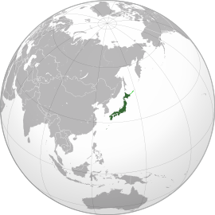

Atenção: Todas as informações apresentadas foram retiradas da wikipedia
.jpeg)

A história do Japão é marcada por três momentos principais:
| Época | Explicação |
|---|---|
Pré-história e Antiguidade |
A ocupação humana do Japão remonta ao Paleolítico Superior e a data mais consensual para a primeira presença humana neste arquipélago é de 35 000 a.C., quando nómades caçadores-coletores chegaram às ilhas vindos do continente através de istmos.
No século VI o Japão foi unificado pela primeira vez. Após vários imperadores, em 710 a capital passou de Asuka para Nara, dando início a uma nova era com muita influência do budismo. |
Era Feudal |
Mais tarde, a capital passou a ser Quioto e deu-se o rompimento entre o imperador Kammu e os monges budistas.
A partir daí foi estabelecida uma nova literatura e escrita japonesa. Surgiram também os primeiros Samurais como guardas da corte. Disputas entre clãs guerreiros levaram a uma guerra civil que terminou em 1185 com a ascensão de Minamoto. No entanto, até ao sec XV houve vários períodos de tensão, devido ao enfraquecimento da autoridade imperial. No séc. XVI, os portugueses chegaram ao Japão iniciando um período intenso de trocas comerciais. Após a morte do imperador Hideyoshi, a oposição ganhou a guerra em 1603 e expulsou todos os estrangeiros e perseguiu todos os católicos. |
Era Moderna |
A política caótica mencionada anteriormente instalou-se por 250 anos, até à chegada de navios americanos, com o intuito de fazer um tratado.
Aconteceram várias guerras com o intuito de conquistar a Coreia, Taiwan e Sacalina. Com a primeira guerra mundial, por estar do aliado aos países vitoriosos, o Japão expandiu a sua influência e exploração territorial. Isto gerou consequências negativas para o país e em 1933 renunciou à Liga das Nações. Em 7 de dezembro de 1941, o Japão atacou a base naval de Pearl Harbor e declarou guerra aos Estados Unidos, Reino Unido e Países Baixos. Este ato fez com que os Estados Unidos entrassem na Segunda Guerra Mundial e, em 8 de dezembro, estes três países declararam guerra ao Japão.Após os bombardeios atômicos de Hiroshima e Nagasaki, em 1945, após a União Soviética também se opor ao país, o Japão concordou com a rendição incondicional de suas forças em 15 de agosto. Em 1947, o Japão aprovou uma nova constituição pacifista enfatizando as práticas democráticas liberais. Japão foi assimilado como membro das Nações Unidas em 1956. |